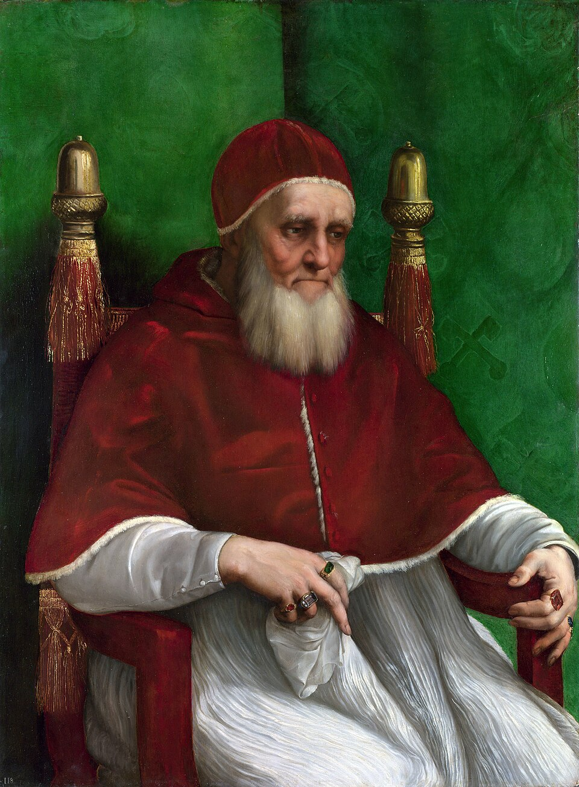

Ritratto di Papa Giulio II
Raffaello Sanzio (1511–1512)

Descrizione dell'Item
Il celebre Ritratto di Papa Giulio II, eseguito da Raffaello Sanzio tra il 1511 e il 1512, raffigura il "Papa guerriero" Giuliano della Rovere assiso in poltrona, assorto in un'espressione introspettiva e segnata dagli anni. L'opera innovò profondamente la ritrattistica papale rinascimentale, abbandonando le tradizionali pose frontali o di profilo in favore di un'inquadratura a tre quarti carica di intimità e tensione psicologica.
La figura di Giulio II è storicamente indissolubile dal destino della Bologna bentivolesca: nel 1488 e poi definitivamente nel 1506, il pontefice guidò personalmente l'esercito pontificio verso Bologna, decretando l'esilio di Giovanni II Bentivoglio e il definitivo assoggettamento della città allo Stato della Chiesa. La barba visibile nel ritratto fu fatta crescere dal papa proprio tra il 1510 e il 1512 in segno di voto fino alla completa liberazione dell'Italia dalle potenze straniere.
Metadati Descrittivi (Dublin Core)
| Identificativo ID | IT12 |
|---|---|
| Titolo | Ritratto di Papa Giulio II (Giuliano della Rovere) |
| Autore / Pittore | Raffaello Sanzio (Authority: VIAF) |
| Datazione | 1511 – 1512 |
| Tipologia Item | Opera d'Arte / Olio su tavola |
| Dimensioni | 108.7 cm × 80.7 cm |
| Luogo di Conservazione | National Gallery, Londra |
| Soggetti / Temi | Giulio II della Rovere, Stato Pontificio, Caduta dei Bentivoglio (1506), Rinascimento Romano, Ritrattistica papale |
Codifica SORGENTE (XML / Dublin Core)
Scarica File XML DCDi seguito viene mostrata la codifica semantica in formato XML-Dublin Core associata a questo item del catalogo:
<metadata
xmlns:dc="http://purl.org/dc/elements/1.1/"
xmlns:dcterms="http://purl.org/dc/terms/"
xmlns:xsi="http://www.w3.org/2001/XMLSchema-instance"
xsi:schemaLocation="http://purl.org/dc/terms/ https://www.dublincore.org/schemas/xmls/qdc/2008/02/11/dcterms.xsd">
<dc:identifier>IT12</dc:identifier>
<dc:title>Ritratto di Papa Giulio II</dc:title>
<dcterms:alternative>Ritratto di Giuliano della Rovere</dcterms:alternative>
<dc:creator>Raffaello Sanzio</dc:creator>
<dcterms:contributor>Giulio II della Rovere</dcterms:contributor>
<dc:date>1511-1512</dc:date>
<dcterms:created>1511-1512</dcterms:created>
<dc:type>Image / Painting</dc:type>
<dcterms:type>Olio su tavola</dcterms:type>
<dc:format>108.7 cm × 80.7 cm</dc:format>
<dcterms:medium>Pittura ad olio su tavola di pioppo</dcterms:medium>
<dc:description>Celebre dipinto di Raffaello Sanzio raffigurante Papa Giulio II assiso in poltrona. Il pontefice fu l'artefice della riconquista pontificia di Bologna nel 1506 e della definitiva cacciata della signoria di Giovanni II Bentivoglio.</dc:description>
<dc:subject>Rinascimento italiano</dc:subject>
<dc:subject>Giulio II della Rovere</dc:subject>
<dc:subject>Cacciata dei Bentivoglio</dc:subject>
<dc:subject>Stato Pontificio</dc:subject>
<dc:subject>Raffaello Sanzio</dc:subject>
<dcterms:spatial>National Gallery, Londra</dcterms:spatial>
<dc:language>it</dc:language>
<dcterms:isPartOf>Bologna bentivolesca: una rete digitale della signoria</dcterms:isPartOf>
<dc:rights>Tutti i diritti riservati</dc:rights>
<dcterms:license>https://creativecommons.org/licenses/by/4.0/</dcterms:license>
</metadata>Connessioni di Rete
Archi della rete grafi collegati a questo nodo:
- dipinto da Raffaello Sanzio
- raffigura Papa Giulio II
- ha causato la cacciata di Giovanni II Bentivoglio (1506)
Item Correlati

Domus Aurea
Palazzo distrutto nel 1507 sotto spinta di papa Giulio II